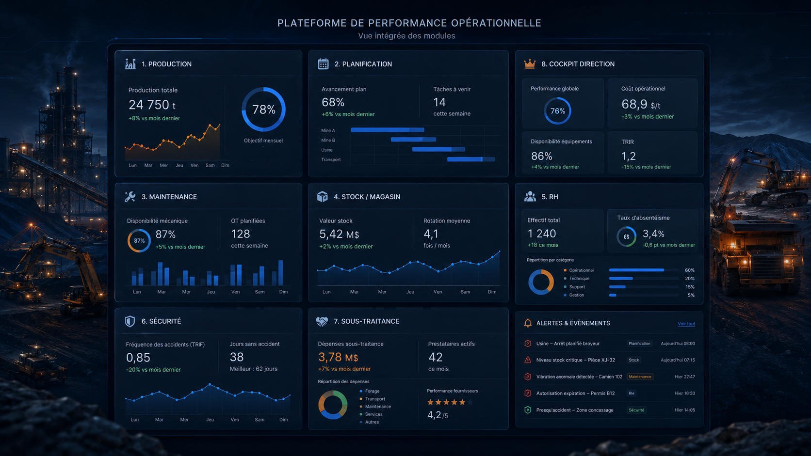

Données dispersées
Centraliser les informations critiques issues du terrain, des fichiers et des outils métiers.
Solutions
Structurer, fiabiliser et exploiter les données terrain pour produire des KPI utiles à la décision.
Vue intégrée des solutions
La solution relie les modules métiers dans une vision cohérente : saisie terrain, suivi opérationnel, KPI, alertes et cockpit Direction.
Vue illustrative, générique et non confidentielle.

Ce que nous résolvons
L’objectif est de passer d’un reporting dispersé à une chaîne de pilotage claire, traçable et exploitable par les équipes terrain comme par la Direction.
Centraliser les informations critiques issues du terrain, des fichiers et des outils métiers.
Réduire les consolidations répétitives et les ressaisies qui fragilisent les indicateurs.
Aligner les définitions, statuts, règles de calcul et formats de données entre services.
Conserver l’historique des saisies, validations et corrections pour mieux comprendre les écarts.
Mettre en visibilité les alertes et tendances avant que les écarts ne deviennent difficiles à corriger.
Solutions proposées
La démarche combine les outils nécessaires selon la maturité de l’entreprise : saisie terrain, imports contrôlés, contrôle qualité, KPI, alertes, tableaux de bord et cockpit Direction.
Remplacer les supports dispersés par des suivis structurés et adaptés aux opérations.
Donner à chaque profil les champs utiles, avec validation, historique et droits d’accès.
Conserver les fichiers utiles tout en ajoutant des règles de format, cohérence et qualité.
Créer des vues opérationnelles pour suivre les écarts, priorités et tendances clés.
Consolider les indicateurs utiles à la décision, sans noyer la Direction dans le détail terrain.
Détecter les données manquantes, incohérentes ou critiques avant exploitation KPI.
Préparer des connexions progressives avec ERP, GMAO, pointeuse ou fichiers métiers.
Intégrer progressivement des données via gateway IoT, API sécurisée ou système industriel intermédiaire.
Diagnostic
Commençons par identifier vos données prioritaires, vos écarts critiques et les KPI réellement utiles à vos décisions.